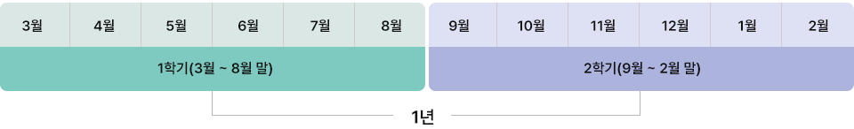

학점인정신청 주의사항
학기의 구분
1년은 당해 3월 1일부터 다음해 2월 말일까지를 의미하고, 1학기는 3월 1일부터 8월 31일까지, 2학기는 9월 1일부터 다음해 2월 말일까지로 구분,
이는 수업이 끝나는 날 (종강일)을 기준으로 함.

- 1년 : 당해 연도 3월 1일 ~ 다음 해 2월 28일까지
- 1학기 : 3월 1일 ~ 8월 31일
- 2학기 : 9월 1일 ~ 다음 해 2월 28일까지
※ 일자는 수업이 끝나는 날을 기준으로 합니다.
제한학점
| 구분 | 연간이수 제한학점 | 학기 당 이수 제한학점 | |
|---|---|---|---|
| 전문학사 | 학사 | 전문학사/학사 | |
| 2002년 2월 28일 이전 수강과목 | 40학점 | 36학점 | 없음 |
| 2002년 3월 1일 이후 수강과목 | 42학점 | 학기 당 최대 24학점 | |
| 제한되는 학점 | 제한되지 않는 학점 |
|---|---|
| 수업을 통한 학점 취득 | 수업 외의 학점 취득 |
|
|
1년 / 1학기 인정 받을 수 있는 학점의 제한
| 연간 이수 제한학점 | 학기 당 이수 제한학점 |
|---|---|
| 42학점 | 24학점 |
1년 / 1학기 제한학점을 적용하는 학점원
학점인정대상학교에서 이수한 학점은 해당 학교와 동일한 연도/학기에 타 학점원(평가인정학습과정, 시간제등록, 독학학위제 시험면제교육과정)을 이수한 경우에 한해, 1년/1학기 제한학점 기준을 적용 받음.
| 제한 (수업을 통한 학점원) | 제한 없음 (수업 이외의 학점원) |
|---|---|
|
|
학위수여예정자의 마지막 학기 구분
학위취득 마지막 학기에는 학기 구분을 아래와 같이 적용합니다.
| 구분 | 마지막 학기 |
|---|---|
| 2월(전기) 학위수여예정자 | 9월 1일 ~ 다음해 1월 15일 |
| 8월(후기) 학위수여예정자 | 3월 1일 ~ 7월 15일 |
※ 전기(2월) 학위수여예정자는 1월 15일까지, 후기(8월) 학위수여예정자는 7월 15일까지 학습이 종료되어 성적증명서 등 증빙서류를 갖추어 제출할 수 있는 학점에 한해 인정가능함.
예) 2018년 전기(2월) 학위수여예정자가 2018년 1월 16일 이후 취득한 학점에 대해서는 학점인정 받을 수 없음.
중복 과목이란?
'중복 과목'이라 함은 [평가인정학습과정], [학점인정대상학교], [시간제등록], [독학학위제 시험합격 및 시험면제교육과정]으로 이수한 과목 중 과목 간 과목명이 동일하거나 동일하다고 보는 과목을 의미합니다. 이러한 중복 과목 중 1개 과목만 학점인정 가능합니다.
중복 과목 판단의 기준 및 예시
| 구분 | 중복과목 판단의 기준 | 예시 |
|---|---|---|
| 1 | 과목명이 동일한 과목 (외국어일 경우 원어의 대소문자 비구분) |
영어 = 영어 ENGLISH = English |
| 2 | 띄어쓰기 여부와 관형격 조사의 사용여부만 다르고 의미가 같은 과목 | 회계 입문 = 회계입문 인터넷의 이해 = 인터넷 이해 |
| 3 | 문장 부호와 특정 조사·부사를 사용하지 않을 때 나열형으로 의미가 같은 과목 | S/W 활용 = SW 활용 EDPS = E.D.P.S 한국 근·현대사 = 한국근현대사 가족상담 및 치료 = 가족상담·치료 |
| 4 | 첫 번째 서열의 과목이거나 숫자의 의미가 같은 과목 | 전공실기 = 전공실기1 = 전공실기 Ⅰ |
| 5 | 약칭 또는 줄임말로 기재된 과목 | 클라이언트/서버 프로그래밍 = C/S 프로그래밍 프리스트레스트 콘크리트 = PS 콘크리트 |
※ 주의사항
- 위 처리 기준에도 불구하고 다음의 경우는 이 기준을 적용하지 않음
: 과목명 내 고유 명사가 포함되었을 경우, 과목 내용과 형식이 다를 경우, 별도 심의에 의해 인정 또는 불인정된 경우 관련 법·규정 등에 따라 별도의 기준이 있을 경우 등 - 아동학(아동·가족 전공), 간호·보건계열 전공과목은 별도 기준이 적용 됨.
1개 교육기관에서 인정받을 수 있는 최대학점
[평가인정학습과정] 및 [독학학위제 시험면제교육과정]으로 이수한 학점은 1개 교육기관에서 인정받을 수 있는 학점이 제한되어 있습니다.
따라서, 학사학위과정에서 전문학사학위과정으로 학위 변경 시, 1개 교육기관에서 이수한 학점이 60학점을 초과한 경우에는 초과된 나머지 학점을 인정받을 수 없음을 유의하여야 합니다.
| 구분 | 최대 인정 학점 |
|---|---|
| 학사학위 과정 | 105학점 |
| 전문학사학위 과정 | 60학점 (수업연한이 3년인 경우 90학점) |
전적대학 최대 학점 인정
전적대학 학점(이전에 졸업한 전문대학 및 대학교에서 이수한 학점)은 희망 학위에 따라 최대 인정학점에 제한이 있습니다.
| 전문학사(2년제) | 전문학사(3년제) | 학사 |
|---|---|---|
| 80학점 | 120학점 | 140학점 |
학위수준별 최대 인정 가능한 자격증 자격수 제한
학사(4년제) 학위 전공자 : 최대 3개 자격증 학점인정 가능 (일선은 최대 1개만 인정)
전문학사(2년제) 학위 전공자 : 최대 2개 자격증 학점인정 가능 (일선은 최대 1개만 인정)
타전공 추가학위 (학사/전문학사) : 전공학점으로 인정 가능한 자격증 최대 1개
학점은행제 의무 18학점 이수
전적대학교 학점, 자격증, 독학학위제 등으로 학위취득에 필요한 학점을 모두 이수하였다 해도 반드시 학점은행제를 통해 18학점 (6과목)을 이수해야 합니다.
독학학위제
국가에서 실시하는 학위취득 시험 응시 기회를 제공하고, 시험에 합격한 독학자에게 학사학위를 수여함으로써 평생교육의 이념을 구현하고 개인의 자아실현과 국가사회의 발전에 기여함을 목적으로 대학에서 취득한 학위와 동등한 대우를 받게 하는 제도
학점인정기준
시험일정 및 전공분야/과목 자세히보기| 단계 | 인정학점 |
|---|---|
| [1단계] 교양과정 인정시험 | 과목당 4학점(최대 5과목, 20학점 인정) |
| [2단계] 전공기초과정인정시험 | 과목당 5학점(단계별 최대 6과목, 30학점 인정) |
| [3단계] 전공심화과정인정시험 | |
| [4단계] 학위취득종합시험 |
※ 독학사 전공을 달리하여 각 단계별 과목을 합격하더라도 단계별 인정 가능한 최대 학점 범위 내에서만 선택하여 학점 인정 됨
(예) 유아교육학 과목 2단계 합격 경영학 과목 2단계 합격 = 최대 6개 과목, 30학점만 인정 가능
희망 과정에 따른 학습방법
※ 아래 내용은 하나의 예시일 뿐 학습자 별 학적 상황, 희망전공, 학위에 따라 학습설계 결과는 달라질 수 있습니다.
자세한 사항은 무료학습설계를 이용해주세요.
예시: 경영 전공 전문학사(2년제) 학위 취득
80학점 경영전문학사 학위취득- 전공 45학점(전필포함), 교양 15학점, 일선 20학점 총 80학점 이상 취득
- 전공 관련 자격증 최대 2개(일반선택 1개)까지 학점인정 가능
- 한 기관 최대 20과목(60학점)까지만 수강 가능
| 김영평생교육원 수강 (필수) |
자격증 취득 (필수) |
독학사 시험 (선택) |
|---|---|---|
| 14과목(2학기) | 한경 TESAT (최대 20학점) 소방안전관리자 1급 (20학점) |
1단계 3과목 이상 |
| 42학점(1년 최대) | 최대 40학점 | 12학점 이상 |
예시: 경영 전공 일반학사(4년제) 학위 취득
140학점 경영학사 학위취득- 전공 60학점(전필포함), 교양 30학점, 일선 50학점 총 140학점 이상 취득
- 전공관련 자격증 최대 3개(일반선택 1개)까지 학점인정 가능
- 한 기관 최대 35과목(105학점)까지만 수강 가능
| 김영평생교육원 수강 (필수) |
자격증 취득 (필수) |
독학사 시험 (필수) |
|---|---|---|
| 22과목(3학기) | 한경 TESAT (최대 20학점) 텔레마케팅관리사 (18학점) 소방안전관리자 1급 (20학점) |
1단계 3과목 이상 2단계 2과목 이상 |
|
42학점(1년 최대) 총 66학점 |
최대 58학점 | 최대 22학점 이상 |
자격증 취득
교육부 장관의 승인을 받아 국가평생교육진흥원장이 고시한 자격 [제20차 자격 학점인정기준]에 대한 학점인정 가능
자격증 학점인정기준 (2005년 10월 변경기준)
학위수준별 최대인정 가능한 자격수 제한
| 학위수준 | 최대인정 자격증 수 |
비고 |
|---|---|---|
| 전문학사 | 2개 |
|
| 학사 | 3개 |
※ 2018년 10월 20일 응시 시험부터 AT(FAT1급, TAT1·2급)학점은행제 자격학점 인정
※ 상세 인정 학점 및 내용은 경영학 및 기타전공 학점인정 가능 자격증 리스트를 다운받아 확인
경영학 학점인정 자격증
| 등급 | 학점인정 | 해당 자격 | 등급 | 학점인정 | 해당 자격 |
|---|---|---|---|---|---|
| 1 | 45 | 기술사, 공인회계사, 변호사, 건축사 등 | 8 | 14 | 컴퓨터활용능력 1급, 네트워크관리사2급 등 |
| 2 | 37 | 공인노무사, 법무사 등 | 9 | 10 | 비서 1급 등 |
| 3 | 30 | 기능장, 문화재수리기술자, 소방시설관리사 등 | 10 | 8 | TEPS 1급, 지역난방설비관리사 등 |
| 4 | 25 | 전자상거래관리사 1급, 여신심사역 등 | 11 | 6 | 컴퓨터활용능력 2급, 인터넷정보관리사 등 |
| 5 | 20 | 기사, 물류관리사, 자산관리사 등 | 12 | 5 | 검수사, 리눅스마스터2급 등 |
| 6 | 18 | 전산회계운용사 1급 등 | 13 | 4 | 비서2급, 워드프로세서 등 |
| 7 | 16 | 산업기사, 공인중개사, 관광통역안내사 등 | 14 | 3 | 무역영어1급, 한자능력급수 1급 |